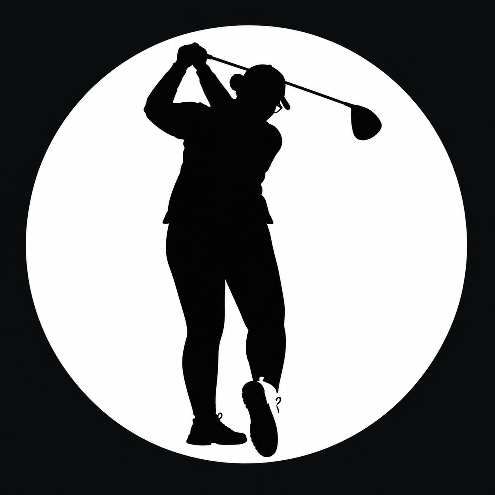

Blind British Open
En stark placering i England och ett viktigt steg på den internationella tävlingsresan.

BLINDGOLFINTERNATIONELL BLINDGOLF
Jag heter Michaela Friberg. Följ min resa på golfbanan – från svensk blindgolf till internationella tävlingar.
MÖT GOLFAREN BAKOM RESAN
Jag heter Michaela Friberg och tävlar inom blindgolf. Golfen ger mig gemenskap, utmaningar och möjligheten att hela tiden utvecklas – både som spelare och människa.
Med min synnedsättning har jag hittat ett sätt att fortsätta satsa på sporten jag älskar. Nu vill jag fortsätta ta steg framåt och samtidigt bidra till att fler får upptäcka blindgolf.
Hör av dig till migFRÅN TRÄNING TILL INTERNATIONELLA BANOR
Målet är att utvecklas, samla erfarenhet och representera svensk blindgolf på den internationella scenen.
En stark placering i England och ett viktigt steg på den internationella tävlingsresan.
Även 3:e plats i min synkategori – en erfarenhet att bygga vidare på.
Planen är att fortsätta tävla internationellt genom IBGA och ta nästa steg som golfare.
03 / VAD ÄR BLINDGOLF?
Blindgolf är golf för personer med synnedsättning. Med anpassningar och stöd från en ledsagare eller caddie kan spelare tävla, utvecklas och dela samma passion för spelet.
Jag vill hjälpa till att synliggöra sporten och inspirera fler att upptäcka möjligheterna på golfbanan.
STÖD · SPONSORER · SAMARBETEN
Internationella tävlingar innebär kostnader för resor, boende, startavgifter och transport av golfutrustning. Ditt stöd hjälper mig att fortsätta satsa – och bidrar samtidigt till att synliggöra blindgolf.
Jag välkomnar både donationer från privatpersoner och samarbeten med företag. Inga färdiga sponsorpaket – hör gärna av dig så pratar vi om vad som passar.
Vill du bidra till min satsning och blindgolfens utveckling? Du kan swisha ett valfritt belopp eller kontakta mig om sponsring och samarbete.
Swisha ett bidragSwishnummer
072-296 11 27
Ingen QR-kod behövs – ange numret i Swish-appen.
Fråga om sponsringTACK FÖR ATT DU FÖLJER MED
Oavsett om du följer tävlingarna, delar sidan vidare, bidrar med ett belopp eller vill samarbeta uppskattar jag att du är en del av resan.
HAR DU EN IDÉ ELLER VILL DU SAMARBETA?
Jag berättar gärna mer om min golfsatsning, kommande tävlingar och möjligheter till samarbete.